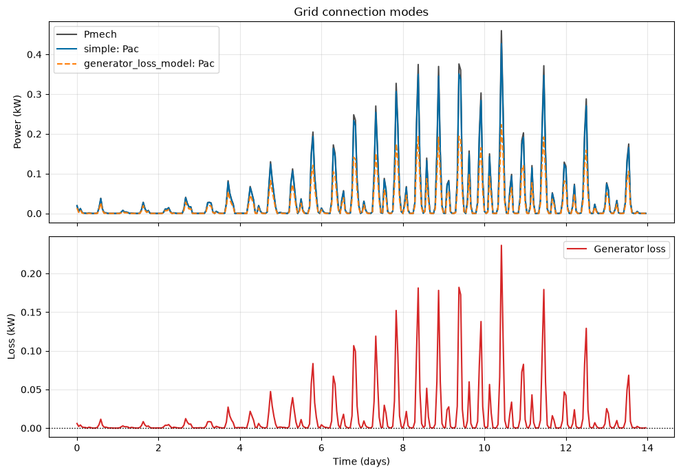
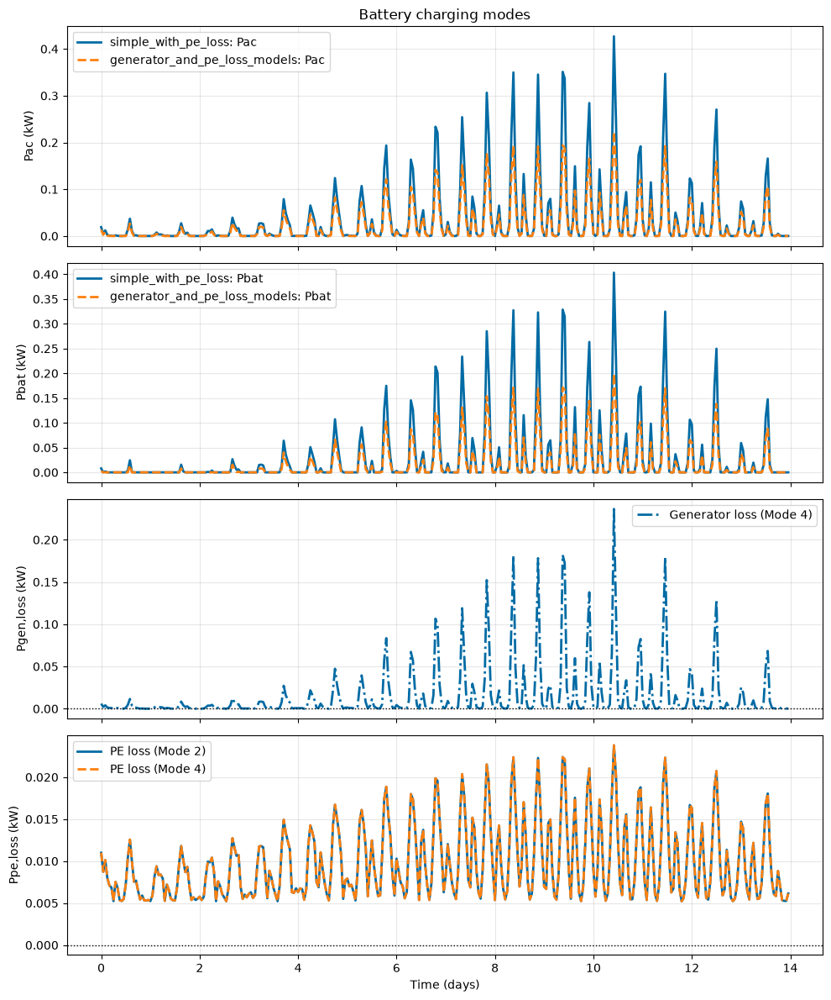

Tutorial 8: Generator and Power Electronics Loss Models (module_rotor_simulation)
This optional advanced tutorial demonstrates how to use the power-conversion modes in RotorSimulation.
The turbine rotor and drivetrain dynamics are always simulated using the same underlying turbine model. After the rotor dynamics are solved, the selected power-conversion model is used to calculate electrical power, losses, AC-side power, and battery-side power.
The four supported power-conversion modes are:
- ``simple``Built-in generator electrical model using
KtandRw. - ``simple_with_pe_loss``Built-in generator model plus a user-supplied power electronics loss model.
- ``generator_loss_model``User-supplied generator loss model used to compute AC-side power from mechanical power.
- ``generator_and_pe_loss_models``User-supplied generator and power electronics loss models used to compute AC-side and battery-side power.
Notes for new users
This is an advanced tutorial. New users should complete the rotor simulation tutorial first.
In
generator_loss_modelandgenerator_and_pe_loss_models,Pelecis treated as AC-side power and is equal toPac.In
simpleandsimple_with_pe_loss,Peleccomes from the built-in generator electrical model.If power electronics losses are included, battery-side power is available as
Pbat. For battery-charging studies with PE losses,Pbatis usually the most relevant delivered-power quantity.The optional loss models are applied after the rotor/drivetrain dynamics are solved. They affect
Pac,Pbat, and loss terms, but they do not feed back into rotor speed or generator torque.The example loss equations in this tutorial are illustrative. Users should replace them with loss models appropriate for their generator and power electronics hardware.
[1]:
import numpy as np
import matplotlib.pyplot as plt
import urllib3
from vital.module_tidal import process_tidal_data
from vital.module_rotor import RotorData
from vital.module_rotor_simulation import RotorSimulation
# Suppress warnings caused by NOAA requests using verify=False internally.
urllib3.disable_warnings(urllib3.exceptions.InsecureRequestWarning)
1. Load tidal resource data
First, load tidal current data using the same basic NOAA workflow used in previous tutorials.
This tutorial uses NOAA data directly. If NOAA access is unavailable, use the local-file workflow from the tidal-data tutorial or configure the documentation build so notebooks are not executed.
[2]:
station = "COI0303"
startdate = "2021-09-01"
range_hrs = 2 * 7 * 24
time_step_s = 3600
city_data_file = "../data/AlaskaCityLatLong.txt"
tidal = process_tidal_data(
station=station,
startdate=startdate,
range_hrs=range_hrs,
time_step_s=time_step_s,
city_data_file=city_data_file,
)
print(f"Data source: {tidal.source}")
print(f"Station name: {tidal.station_name}")
print(f"Mooring distance: {tidal.mooring_distance:.2f} m")
print(f"Cable length: {tidal.cable_length:.2f} m")
print(f"Number of time points: {len(tidal.times)}")
time_days = tidal.times / (3600 * 24)
plt.figure(figsize=(8, 4))
plt.plot(time_days, tidal.flow_speeds)
plt.xlabel("Time (days)")
plt.ylabel("Flow speed (m/s)")
plt.title(f"Tidal resource at {tidal.station_name}")
plt.grid(True)
plt.tight_layout()
plt.show()
Data source: NOAA
Station name: Port Mackenzie, South of
Mooring distance: 31.10 m
Cable length: 3970.22 m
Number of time points: 336

2. Load rotor performance data
Next, load the rotor performance data.
The rotor file provides TSR, Ct, and Cq. VITAL computes the power coefficient internally as:
The resulting rotor object provides coefficient functions used by the simulation. See the rotor-data tutorial for details on interpolation, extrapolation, and optional Cpmin data.
[3]:
rotor_performance_file = "../data/Sitkana_rotor_data_blade_2.txt"
rotor = RotorData(rotor_performance_file)
print(f"Optimal Cp: {rotor.CpOpt:.4f}")
print(f"Optimal TSR: {rotor.TSROpt:.4f}")
print(f"Estimated TSRmax: {rotor.TSRmax:.4f}")
print(f"Measured TSR range: {rotor.tsr.min():.4f} to {rotor.tsr.max():.4f}")
Optimal Cp: 0.2119
Optimal TSR: 0.7648
Estimated TSRmax: 1.7084
Measured TSR range: 0.0526 to 1.7015
3. Define a base turbine configuration
Set up a base configuration that will be reused for all four power-conversion modes.
The number_of_turbines entry is included for consistency with other tutorials, although RotorSimulation evaluates a single-turbine time series.
The power_model entry is intentionally not included in this base configuration. It is added separately for each power-conversion mode in the next section.
[4]:
base_config = {
# Turbine geometry and ratings
"Radius": 0.5, # Rotor radius (m)
"Prated": 1000.0, # Rated electrical power (W)
"Trated": 15.0, # Rated generator torque (N m)
"dHub": 2.0, # Hub depth (m)
# Included for consistency with other tutorials.
# RotorSimulation itself evaluates a single-turbine time series.
"number_of_turbines": 2,
# Site/time inputs
"dMoor": tidal.mooring_distance, # Mooring depth/distance (m)
"Uinf": tidal.flow_speeds, # Surface/current speed time series (m/s)
"t": tidal.times, # Time vector (s)
# Rotor performance functions
"CpFunc": rotor.get_cp,
"CqFunc": rotor.get_cq,
"CtFunc": rotor.get_ct,
"CpOpt": rotor.CpOpt,
"TSROpt": rotor.TSROpt,
"TSRmax": rotor.TSRmax,
# Drivetrain and generator parameters
"Ng": 20, # Gear ratio
"Kt": 1.5, # Generator torque constant
"Rw": 1.0, # Generator winding resistance
"J_d": 1.0, # Drivetrain inertia
"B_d": 0.5, # Drivetrain damping/friction
"J_r": 1.0, # Rotor inertia
}
4. Define example loss models
In the loss-model modes, users provide loss equations as Python callables of the form
loss_model(omega_g, tau)
where:
omega_gis generator-side angular speed in rad/stauis generator torque in N m
The callable should return loss power in watts.
In this example, generator and power electronics losses are represented using simple algebraic equations. These are illustrative example models and should be replaced with validated loss models for a specific generator and power electronics system.
The implementation clips user-supplied loss values to be nonnegative before computing Pac and Pbat.
[5]:
def generator_loss_model(omega_g, tau):
"""
Example generator loss model.
Parameters
----------
omega_g : float or np.ndarray
Generator-side angular speed (rad/s).
tau : float or np.ndarray
Generator torque (N m).
Returns
-------
float or np.ndarray
Generator loss power (W).
"""
return 0.137 * np.abs(omega_g) + 3.118 * tau**2
def pe_loss_model(omega_g, tau):
"""
Example power electronics loss model.
Parameters
----------
omega_g : float or np.ndarray
Generator-side angular speed (rad/s).
tau : float or np.ndarray
Generator torque (N m).
Returns
-------
float or np.ndarray
Power electronics loss power (W).
"""
return 5.204 + 0.2896 * np.abs(omega_g) + 0.3559 * np.abs(tau)
5. Run the four supported power-conversion modes
Next, run the same rotor/turbine configuration using each supported power_model.
The helper function below copies base_config, applies the mode-specific updates, runs RotorSimulation, and returns the simulation results.
[6]:
def run_rotor_simulation(config_updates, label):
"""
Create a simulation configuration, run RotorSimulation, and return results.
Parameters
----------
config_updates : dict
Dictionary of settings to update from base_config.
label : str
Label printed to identify the simulation mode.
Returns
-------
dict
Simulation results from RotorSimulation.get_results().
"""
config = base_config.copy()
config.update(config_updates)
print(f"Running mode: {label}")
sim = RotorSimulation(config)
sim.simulate()
results = sim.get_results()
print(f" Complete.")
print(f" Mean Pelec: {np.mean(results['Pelec']) / 1000:.3f} kW")
print(f" Mean Pac: {np.mean(results['Pac']) / 1000:.3f} kW")
print(f" Mean Pbat: {np.mean(results['Pbat']) / 1000:.3f} kW")
print(f" Mean Pgen_loss: {np.mean(results['Pgen_loss']) / 1000:.3f} kW")
print(f" Mean Ppe_loss: {np.mean(results['Ppe_loss']) / 1000:.3f} kW")
print()
return results
# Mode 1: simple
# Built-in generator electrical model using Kt and Rw.
res_simple = run_rotor_simulation(
config_updates={
"power_model": "simple",
},
label="simple",
)
# Mode 2: simple_with_pe_loss
# Built-in generator model plus user-supplied power electronics loss model.
res_simple_pe = run_rotor_simulation(
config_updates={
"power_model": "simple_with_pe_loss",
"pe_loss_model": pe_loss_model,
},
label="simple_with_pe_loss",
)
# Mode 3: generator_loss_model
# User-supplied generator loss model. No PE loss model is applied.
res_gen_loss = run_rotor_simulation(
config_updates={
"power_model": "generator_loss_model",
"generator_loss_model": generator_loss_model,
},
label="generator_loss_model",
)
# Mode 4: generator_and_pe_loss_models
# User-supplied generator loss model plus user-supplied PE loss model.
res_gen_pe = run_rotor_simulation(
config_updates={
"power_model": "generator_and_pe_loss_models",
"generator_loss_model": generator_loss_model,
"pe_loss_model": pe_loss_model,
},
label="generator_and_pe_loss_models",
)
Running mode: simple
Solving the initial value problem (IVP) for turbine dynamics...
IVP solving complete.
Complete.
Mean Pelec: 0.037 kW
Mean Pac: 0.037 kW
Mean Pbat: 0.037 kW
Mean Pgen_loss: 0.000 kW
Mean Ppe_loss: 0.000 kW
Running mode: simple_with_pe_loss
Solving the initial value problem (IVP) for turbine dynamics...
IVP solving complete.
Complete.
Mean Pelec: 0.037 kW
Mean Pac: 0.037 kW
Mean Pbat: 0.030 kW
Mean Pgen_loss: 0.000 kW
Mean Ppe_loss: 0.010 kW
Running mode: generator_loss_model
Solving the initial value problem (IVP) for turbine dynamics...
IVP solving complete.
Complete.
Mean Pelec: 0.023 kW
Mean Pac: 0.023 kW
Mean Pbat: 0.023 kW
Mean Pgen_loss: 0.015 kW
Mean Ppe_loss: 0.000 kW
Running mode: generator_and_pe_loss_models
Solving the initial value problem (IVP) for turbine dynamics...
IVP solving complete.
Complete.
Mean Pelec: 0.023 kW
Mean Pac: 0.023 kW
Mean Pbat: 0.017 kW
Mean Pgen_loss: 0.015 kW
Mean Ppe_loss: 0.010 kW
6. Compare power-conversion modes by application
The four supported power-conversion modes can be interpreted in terms of the output quantity of interest:
Grid connection or AC-side analysis: modes focused on AC-side electrical output,
Pac.Battery charging or DC-side analysis: modes that include power-electronics losses and report battery-side power,
Pbat.
The following comparisons are organized around these output quantities.
Grid connection or AC-side comparison
For grid-connected applications, the primary quantity of interest is often the AC-side electrical output power, Pac.
The comparison below shows the default simple generator model and the optional generator_loss_model formulation.
[7]:
time_days = res_simple["t"] / (3600 * 24)
fig, ax = plt.subplots(2, 1, figsize=(10, 7), sharex=True)
# AC-side power
ax[0].plot(
time_days,
res_simple["Pmech"] / 1000,
label="Pmech",
color="k",
alpha=0.7,
)
ax[0].plot(
time_days,
res_simple["Pac"] / 1000,
label="simple: Pac",
linestyle="-",
)
ax[0].plot(
time_days,
res_gen_loss["Pac"] / 1000,
label="generator_loss_model: Pac",
linestyle="--",
)
ax[0].set_ylabel("Power (kW)")
ax[0].set_title("Grid connection modes")
ax[0].legend()
ax[0].grid(True, alpha=0.3)
# Generator loss
ax[1].plot(
time_days,
res_gen_loss["Pgen_loss"] / 1000,
label="Generator loss",
color="tab:red",
)
ax[1].axhline(0.0, color="k", linestyle=":", linewidth=1)
ax[1].set_ylabel("Loss (kW)")
ax[1].set_xlabel("Time (days)")
ax[1].legend()
ax[1].grid(True, alpha=0.3)
plt.tight_layout()
plt.show()

Battery charging or DC-side comparison
For battery-charging applications, the AC-side power, battery-side power, generator loss, and power electronics loss can be compared separately.
In this comparison, Pbat represents the battery-side power after power-electronics losses are applied. This makes it easier to see how the optional generator loss model changes the overall power-conversion pathway.
[8]:
time_days = res_simple_pe["t"] / (3600 * 24)
fig, ax = plt.subplots(4, 1, figsize=(10, 12), sharex=True)
lw = 2
# AC-side power
ax[0].plot(
time_days,
res_simple_pe["Pac"] / 1000,
linestyle="-",
linewidth=lw,
label="simple_with_pe_loss: Pac",
)
ax[0].plot(
time_days,
res_gen_pe["Pac"] / 1000,
linestyle="--",
linewidth=lw,
label="generator_and_pe_loss_models: Pac",
)
ax[0].set_ylabel("Pac (kW)")
ax[0].set_title("Battery charging modes")
ax[0].legend()
ax[0].grid(True, alpha=0.3)
# Battery-side power
ax[1].plot(
time_days,
res_simple_pe["Pbat"] / 1000,
linestyle="-",
linewidth=lw,
label="simple_with_pe_loss: Pbat",
)
ax[1].plot(
time_days,
res_gen_pe["Pbat"] / 1000,
linestyle="--",
linewidth=lw,
label="generator_and_pe_loss_models: Pbat",
)
ax[1].set_ylabel("Pbat (kW)")
ax[1].legend()
ax[1].grid(True, alpha=0.3)
# Generator loss
ax[2].plot(
time_days,
res_gen_pe["Pgen_loss"] / 1000,
linestyle="-.",
linewidth=lw,
label="Generator loss (Mode 4)",
)
ax[2].axhline(0.0, color="k", linestyle=":", linewidth=1)
ax[2].set_ylabel("Pgen,loss (kW)")
ax[2].legend()
ax[2].grid(True, alpha=0.3)
# PE loss
ax[3].plot(
time_days,
res_simple_pe["Ppe_loss"] / 1000,
linestyle="-",
linewidth=lw,
label="PE loss (Mode 2)",
)
ax[3].plot(
time_days,
res_gen_pe["Ppe_loss"] / 1000,
linestyle="--",
linewidth=lw,
label="PE loss (Mode 4)",
)
ax[3].axhline(0.0, color="k", linestyle=":", linewidth=1)
ax[3].set_ylabel("Ppe,loss (kW)")
ax[3].set_xlabel("Time (days)")
ax[3].legend()
ax[3].grid(True, alpha=0.3)
plt.tight_layout()
plt.show()

7. Summarize average power by mode
The plots above show the time-varying behavior. It is also useful to compare average power and loss values for each mode.
The table below summarizes:
mean mechanical power,
Pmechmean primary electrical output,
Pelecmean AC-side power,
Pacmean battery-side power,
Pbatmean generator loss,
Pgen_lossmean power-electronics loss,
Ppe_loss
All values are reported in kW.
[9]:
def summarize_mode(name, results):
"""
Return mean power and loss quantities for one simulation mode in kW.
"""
return {
"mode": name,
"Pmech_kW": np.mean(results["Pmech"]) / 1000,
"Pelec_kW": np.mean(results["Pelec"]) / 1000,
"Pac_kW": np.mean(results["Pac"]) / 1000,
"Pbat_kW": np.mean(results["Pbat"]) / 1000,
"Pgen_loss_kW": np.mean(results["Pgen_loss"]) / 1000,
"Ppe_loss_kW": np.mean(results["Ppe_loss"]) / 1000,
}
summary_rows = [
summarize_mode("simple", res_simple),
summarize_mode("simple_with_pe_loss", res_simple_pe),
summarize_mode("generator_loss_model", res_gen_loss),
summarize_mode("generator_and_pe_loss_models", res_gen_pe),
]
header = (
f"{'Mode':<38}"
f"{'Pmech':>10}"
f"{'Pelec':>10}"
f"{'Pac':>10}"
f"{'Pbat':>10}"
f"{'Pgen_loss':>14}"
f"{'Ppe_loss':>12}"
)
print(header)
print("-" * len(header))
for row in summary_rows:
print(
f"{row['mode']:<38}"
f"{row['Pmech_kW']:>10.3f}"
f"{row['Pelec_kW']:>10.3f}"
f"{row['Pac_kW']:>10.3f}"
f"{row['Pbat_kW']:>10.3f}"
f"{row['Pgen_loss_kW']:>14.3f}"
f"{row['Ppe_loss_kW']:>12.3f}"
)
Mode Pmech Pelec Pac Pbat Pgen_loss Ppe_loss
--------------------------------------------------------------------------------------------------------
simple 0.039 0.037 0.037 0.037 0.000 0.000
simple_with_pe_loss 0.039 0.037 0.037 0.030 0.000 0.010
generator_loss_model 0.039 0.023 0.023 0.023 0.015 0.000
generator_and_pe_loss_models 0.039 0.023 0.023 0.017 0.015 0.010
8. Interpreting the results
The four modes represent different levels of power-conversion detail:
simple: uses the built-in generator model. No generator-loss model or PE-loss model is applied.simple_with_pe_loss: starts from the built-in generator model, then subtracts PE losses to computePbat.generator_loss_model: subtracts a user-supplied generator loss from mechanical power to computePac.generator_and_pe_loss_models: subtracts both generator losses and PE losses to compute battery-side power.
For grid-connected or AC-side studies, Pac is usually the most relevant output.
For battery-charging studies with power-electronics losses, Pbat is usually the most relevant delivered-power output.
9. Summary
This tutorial demonstrated four power-conversion modes in RotorSimulation:
simplesimple_with_pe_lossgenerator_loss_modelgenerator_and_pe_loss_models
The main outputs are:
Pmech: mechanical power at the generator sidePelec: primary electrical output used for compatibility with other VITAL workflowsPac: AC-side electrical powerPbat: battery-side power; when PE losses are included, this isPacminus PE lossesPgen_loss: generator lossPpe_loss: power-electronics loss
The example loss equations in this tutorial are illustrative. Users should replace them with validated generator and power-electronics loss models for their own hardware.